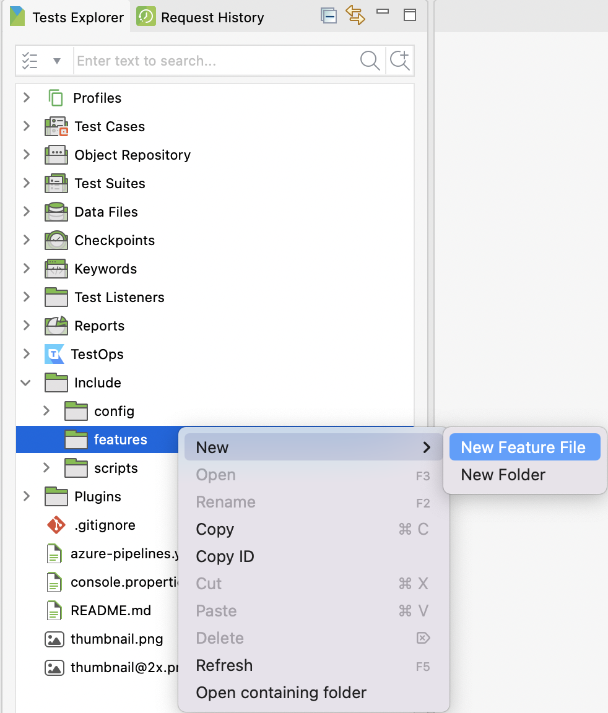
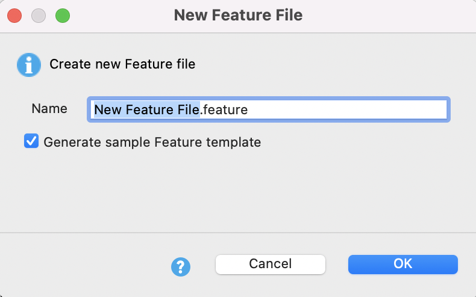
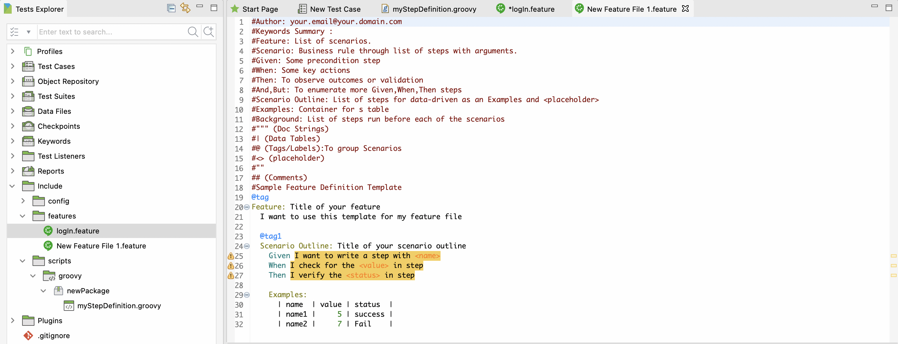
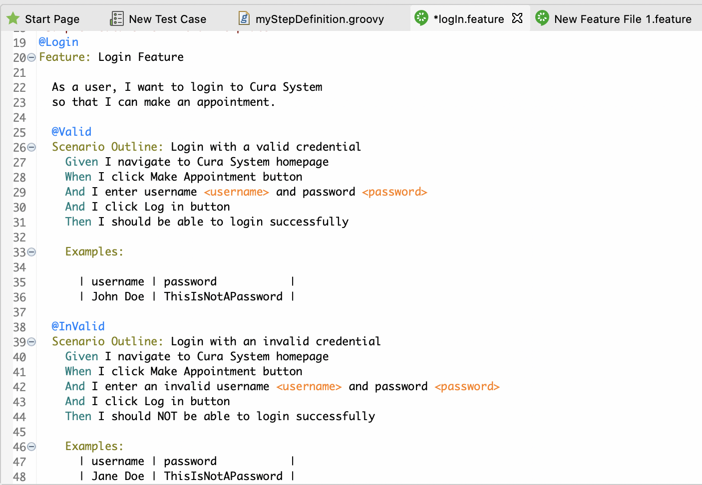

Add Feature Files
This section shows you how to add feature files in Katalon Studio. Steps in the scenario will then be defined by step definitions.
- In Katalon Studio, open a Katalon project. Then, navigate to Test Explorer > Include > features. Right-click on the features folder and choose New Feature File.
- The New Feature File dialog appears. Give your feature file a name. You may also choose to Generate sample Feature template. This option ensures that the created features file matches with BDD convention.A new feature file is created.
- Add your scenarios to the feature file following the sample format:
Feature: List of scenarios.
Scenario: Business rule through list of steps with arguments.
Scenario Outline: Used where test data is replaced with multiple sets of data for each run of a test script.
Given: Precondition step.
When: Key actions.
Then: Observe outcomes or validation.
And, But: Enumerate more Given, When, Then steps.
Background: List of steps run before each of the scenarios.
Examples: Container for data set.
Tags/ Labels: To group relevant scenarios. Using tags is a good way to organize features and scenario. A feature or scenario may have multiple tags.
For example, to test the Login feature of the Katalon Demo Cura System (https://katalon-demo-cura.herokuapp.com/), there are two scenario outlines: login with a valid credential, and login with an invalid credential. In each scenario, there are specific Given, When, Then steps as shown below:Sample Feature File Script:#Author: your.email@your.domain.com #Keywords Summary : #Feature: List of scenarios. #Scenario: Business rule through list of steps with arguments. #Given: Some precondition step #When: Some key actions #Then: To observe outcomes or validation #And,But: To enumerate more Given,When,Then steps #Scenario Outline: List of steps for data-driven as an Examples and <placeholder> #Examples: Container for s table #Background: List of steps run before each of the scenarios #""" (Doc Strings) #| (Data Tables) #@ (Tags/Labels):To group Scenarios #<> (placeholder) #"" ## (Comments) #Sample Feature Definition Template @Login Feature: Login Feature As a user, I want to login to Cura System so that I can make an appointment. @Valid Scenario Outline: Login with a valid credential Given I navigate to Cura System homepage When I click Make Appointment button And I enter username <username> and password <password> And I click Log in button Then I should be able to login successfully Examples: | username | password | | John Doe | ThisIsNotAPassword | @InValid Scenario Outline: Login with an invalid credential Given I navigate to Cura System homepage When I click Make Appointment button And I enter an invalid username <username> and password <password> And I click Log in button Then I should NOT be able to login successfully Examples: | username | password | | Jane Doe | ThisIsNotAPassword |